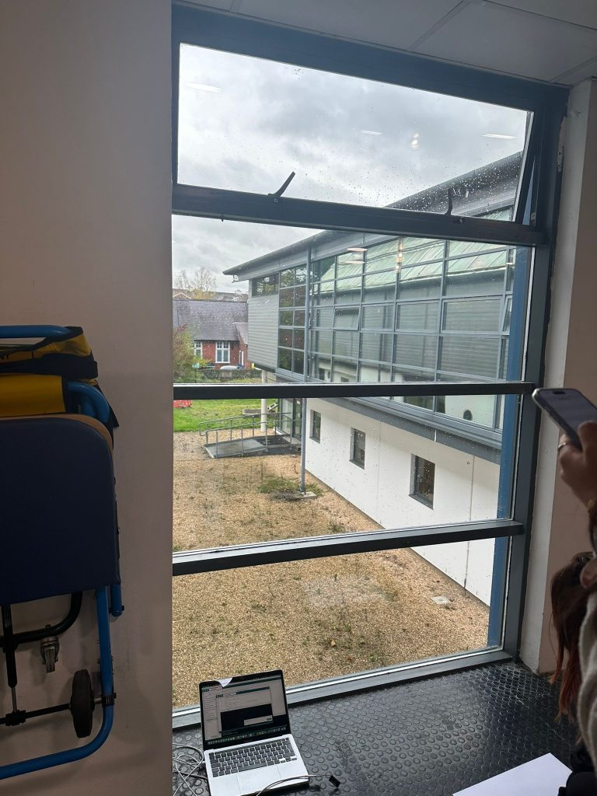
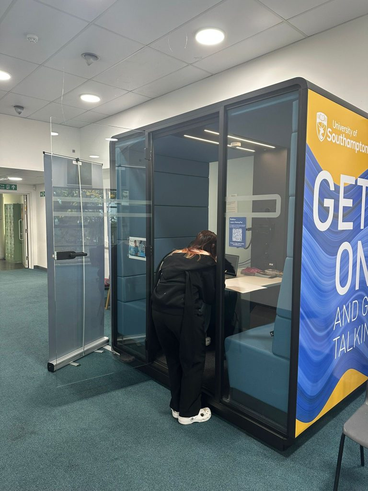
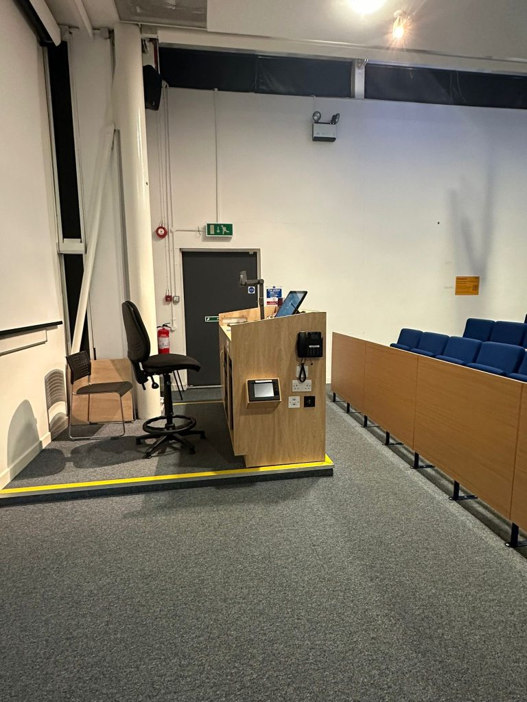
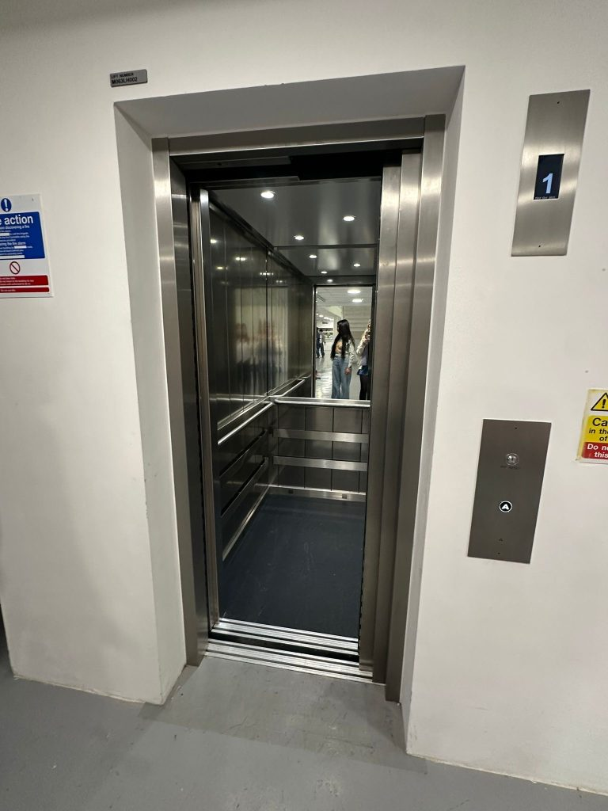
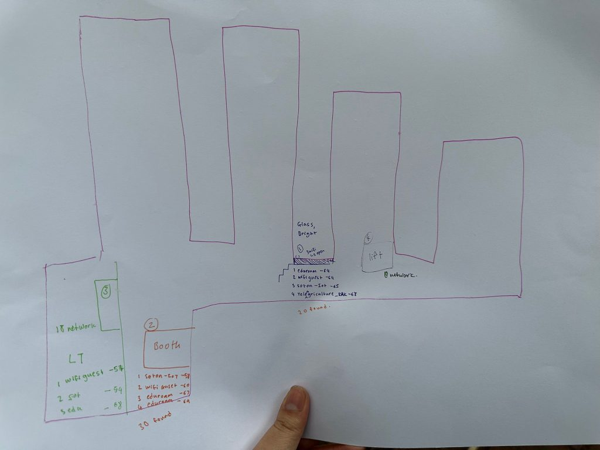
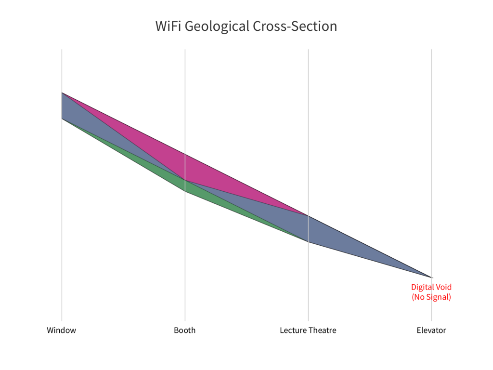

WiFi Scanning and Creative Mapping: A Geological Interpretation of Invisible Signals
Project Concept
This project explores invisible WiFi signals as if they were geological and archaeological strata embedded within architectural space. Instead of treating WiFi data as purely technical information, the project translates wireless networks into layered geological materials, allowing viewers to “read” digital connectivity as a physical and historical landscape.
By using cross-section drawings, WiFi signals are represented as sedimentary layers, bedrock formations, and fault lines, revealing how digital infrastructures shape our everyday environments in invisible yet powerful ways.
Measurement Locations
Four measurement points were selected within the building based on their architectural and spatial characteristics:
- Window Area – close to glass surfaces and external exposure.

2. Booth Area – semi-enclosed seating space with partial acoustic and physical isolation.

3. Lecture Theatre – large open interior space with high user density.

4. Elevator Area – vertical circulation zone surrounded by metal structures.

These locations were chosen to compare how architectural materials, enclosure, and movement affect WiFi signal behaviour.
Each location was photographed and assigned a point number to maintain spatial reference.

Collected WiFi Data
Point 1 – Window Area
18 networks found
| SSID | RSSI | Channel | Encryption |
|---|---|---|---|
| WiFi Guest | -68 | 1 | Open |
| SOTON-IOT | -68 | 1 | WPA2 |
| eduroam | -68 | 1 | WPA2-EAP |
Spatial description:
Bright area near glass windows, strong daylight, open boundary to outside.
Point 2 – Booth Area
20 networks found
| SSID | RSSI | Channel | Encryption |
|---|---|---|---|
| eduroam | -64 | 1 | WPA2-EAP |
| WiFi Guest | -64 | 1 | Open |
| SOTON-IOT | -65 | 1 | WPA2 |
| Teleagriculture_RAK | -68 | 1 | WPA2 |
Spatial description:
Semi-enclosed seating booth with partial acoustic and visual isolation.
Point 3 – Lecture Theatre
24 networks found
| SSID | RSSI | Channel | Encryption |
|---|---|---|---|
| eduroam | -68 | 1 | WPA2-EAP |
| WiFi Guest | -68 | 1 | Open |
| SOTON-IOT | -68 | 1 | WPA2 |
Spatial description:
Large open interior with high occupancy and dense digital activity.
Point 4 – Elevator Area
0 networks found – Disconnected
Spatial description:
Metal enclosed lift cabin, strong shielding, complete signal loss.
WiFi Signal Visualisation Using Processing 5
The WiFi data collected from the four measurement points was translated into an artistic geological cross-section using Processing 5. This approach visualizes invisible WiFi signals as layered strata, representing both signal strength and network presence across different spatial locations.
1. Mapping WiFi Data to Layers
- Signal Strength → Layer Thickness:
- Strong signals (closer to 0 dBm) are drawn as thicker layers.
- Medium signals are thinner, and weak signals are very thin or absent.
- Network Names → Colors and Patterns:
- eduroam → Orange (#d95f02) with cross-hatching (WPA2-EAP)
- WiFi Guest → Green (#1b9e77) with no pattern (Open)
- SOTON-IOT → Purple (#7570b3) with diagonal lines (WPA2)
- Teleagriculture_RAK → Pink (#e7298a) with backslashes (WPA2)
- Digital Void: The Elevator area had no detectable networks and is represented as a red label “Digital Void (No Signal)”.
2. Visualisation Process
- Define spatial positions for each measurement point along the horizontal axis.
- Draw layers for each network at each point:
- The top edge corresponds to the vertical position of the measurement point.
- The bottom edge is offset downward according to signal strength (layer thickness).
- Connect layers between points to create continuous strata, showing how signal strength changes across space.
- Add reference lines and labels for each location for clarity.
- Export artwork as a high-resolution PNG file for documentation.
3. Processing Implementation
- The visualization was implemented in Processing 5 using the beginShape() and vertex() functions to draw the polygonal layers.
- Semi-transparent fills were applied to show overlapping networks.
- The final artwork was saved as wifi_artwork_processing.png in the project folder, making it easy to include in reports or presentations.
4. Output
The resulting cross-section provides a clear, speculative map of WiFi coverage:

- Thick orange, green, and purple layers indicate areas of strong WiFi coverage.
- Thin or missing layers highlight weaker signal areas.
- The elevator region clearly demonstrates a “Digital Void”, emphasizing how physical structures can completely block connectivity.
This method transforms invisible network data into a visual and interpretable landscape, bridging technical measurement and creative expression.
Conclusion
This project demonstrates how invisible WiFi signals can be interpreted creatively as geological strata, revealing patterns of connectivity across different architectural spaces. By mapping signal strength, network types, and dead zones into layered visualisations, we gain both an artistic and analytical perspective on how physical environments shape digital landscapes. The resulting artwork not only makes the intangible visible but also encourages reflection on the interplay between technology, space, and human activity. This approach could be extended to explore signal archaeology in other environments or to communicate connectivity patterns in a visually engaging way.